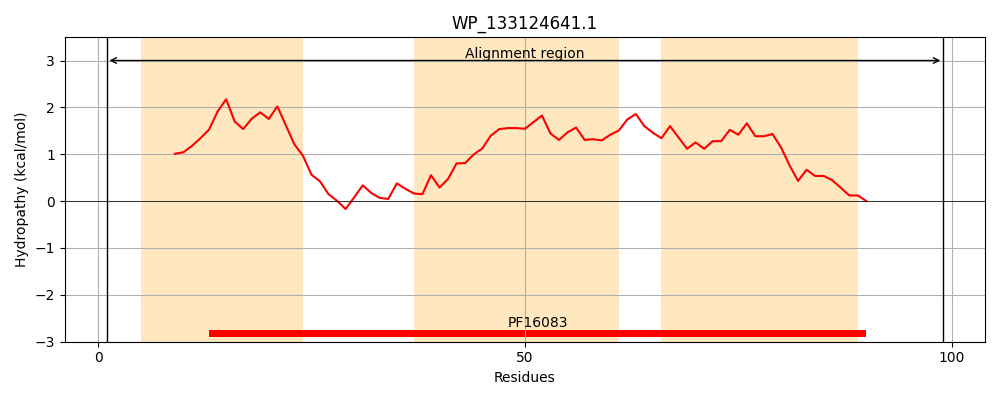
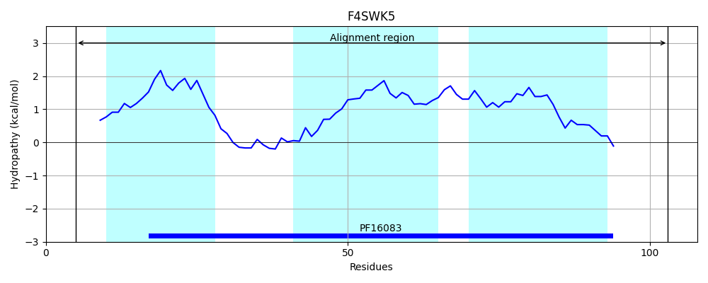
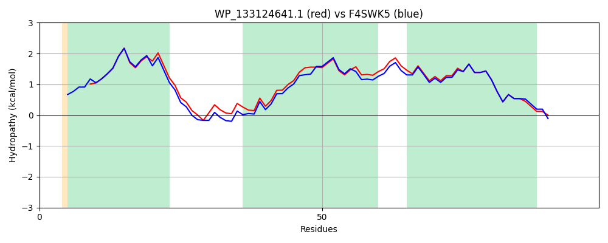

Hit Accession: F4SWK5
Hit TCID: 1.E.5.2.5
Hit Description: gnl|BL_ORD_ID|4300 gnl|TC-DB|F4SWK5|1.E.5.2.5 Putative holin protein OS=Escherichia coli M605 GN=ECIG_00809 PE=4 SV=1
Mach Len: 99
e:0.000000
Query TMS Count : 3
Hit TMS Count: 3
TMS-Overlap Score: 3.400000
Predicted Substrates:None
BLAST Alignment:
| Protein Hydropathy Plots: | |
|---|---|
|  |  |
Pairwise Alignment-Hydropathy Plot: | |
|  | |